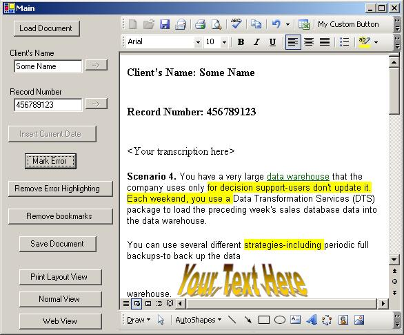

Integrating Microsoft Word In .NET IntroductionThis article will explain how we can use Microsoft Word in your .NET application. This will enable you to use your favorite word-processor within your .NET application. BackgroundI had been working on migrating or improving different transcription workflow applications (medical and legal) applications in .NET. The biggest problem that the transcriptionists faced while transcribing was that of the editor. All of them used an HTML editor which is a part of the windows-form application. In the period of 4-5 years of this application usage, the clients started using MS-Word. Therefore they required that we send Word documents as output, instead of the HTML documents sent till now. The workflow was changed by doing this manually. We wanted to have a Word control similar to the HTML editor that can become a part of the application. Unfortunately, there is no such way to do that. While searching at Google, I came across the project which shows the trick of making any window the part of your application. This article is based on the article posted at http://www.codeproject.com/cs/miscctrl/winwordcontrol.asp Just when I was writing this article, I found one more article suggesting this trick at: http://www.codeproject.com/vb/net/ByPassAutomation.asp Using the codeI would highly recommend reading the base-article mentioned in the Background section. It is posted at http://www.codeproject.com/cs/miscctrl/winwordcontrol.asp When we contain a window within our application, we do not want that the window should be allowed to close through its Close (X) button. Similarly, we do not want the Minimize, Maximize and Restore buttons to work. One way to solve the problem is to hide the title bar itself. This can be done using the SystemInformation class, as show below int borderWidth = SystemInformation.Border3DSize.Width; int borderHeight = SystemInformation.Border3DSize.Height; int captionHeight = SystemInformation.CaptionHeight; int statusHeight = SystemInformation.ToolWindowCaptionHeight; // Move the window in the container so that the container borders hide the window's title bar. MoveWindow( wordWnd, -2*borderWidth, -2*borderHeight - captionHeight, this.Bounds.Width + 4*borderWidth, this.Bounds.Height + captionHeight + 4*borderHeight + statusHeight, true); But what would happen if the user presses "Alt+Spacebar"? This will open up the System Menu for the user, where the user can select Restore, Minimize, Close, etc. We don't even want that to happen. We can disable this System Menu using the Windows API. This is shown below. // We want to remove the system menu also.
// The title bar is not visible, but we want to avoid
// accidental minimize, maximize, etc ..by
// disabling the system menu (Alt+Space)
int hMenu = GetSystemMenu(wordWnd,false);
if(hMenu>0)
{
int menuItemCount = GetMenuItemCount(hMenu);
RemoveMenu(hMenu, menuItemCount - 1, MF_REMOVE | MF_BYPOSITION);
RemoveMenu(hMenu, menuItemCount - 2, MF_REMOVE | MF_BYPOSITION);
RemoveMenu(hMenu, menuItemCount - 3, MF_REMOVE | MF_BYPOSITION);
RemoveMenu(hMenu, menuItemCount - 4, MF_REMOVE | MF_BYPOSITION);
RemoveMenu(hMenu, menuItemCount - 5, MF_REMOVE | MF_BYPOSITION);
RemoveMenu(hMenu, menuItemCount - 6, MF_REMOVE | MF_BYPOSITION);
RemoveMenu(hMenu, menuItemCount - 7, MF_REMOVE | MF_BYPOSITION);
RemoveMenu(hMenu, menuItemCount - 8, MF_REMOVE | MF_BYPOSITION);
DrawMenuBar(wordWnd);
}
You may also want to have only some command bars in the MS-Word window. E.g. you may not want the "Menu Bar" (which is also a command bar in MS-Word). This is shown below. objWinWordControl.document.ActiveWindow.Application.CommandBars["Menu Bar"].Enabled=false; The "Standard" command bar in MS-Word has the "New" and "Open" buttons also. We wanted to disable those buttons also. We did that as shown below wd.ActiveWindow.Application.CommandBars["Standard"].Controls[1].Enabled=false; wd.ActiveWindow.Application.CommandBars["Standard"].Controls[2].Enabled=false; In some cases, you will need to have the "Menu Bar", but not all the sub-menu options. You can disable those options by using the CommandBarPopUp class Office.CommandBarPopup c; c = (Office.CommandBarPopup)wd.ActiveWindow.Application.CommandBars["Menu Bar"].Controls[0]; c.Controls["Close Window"].Enabled=false; The attached codeThe code attached is part of the larger transcription workflow. It is developed using .NET 1.1 framework and MS-Word 2000. In most transcription applications, you will have a scenario like "Transcription --> QA1 --> QA2....." In these cases, you will have to give an error-marking facility to the QAs. I have just shown a demo in a very basic manner. Say, when a transcript goes from QA1 to QA2, the errors marked by QA2 should not be shown. Therefore we need to remove the error-marking before displaying the transcript to QA2. We need to have specific kind of templates for different clients of the transcription division. These templates can be pre-configured and used to create new documents (through the "LoadDocument" method). An example of this is shown through the "Load Document" button. In most cases, you will require that the part of the document being transcribe is automatically filled up. E.g. the Client's ID, Current Date, Record Number, etc. This kind of information will come from the database, therefore must be automatically filled up. I have accomplished this using "Bookmarks" in the word document. A sample can be seen using the "Sample.dot" file. You can do much more than what is shown in the attached code. Please find more about Microsoft Word Automation and Windows APIs at MSDN. EnhancementsWhile this application just integrates (contains) MS-Word in .NET application, it was quite interesting to do so with other applications also. We did that with an audio player and found that the concept of containing windows was really useful the second time too. Please feel free to send me your suggestions Author: Anup Shinde Environment: .NET 1.1, C#, Word 2000 (or higher) Description: This article explains how you can integrate Microsoft Word in your .NET application
|